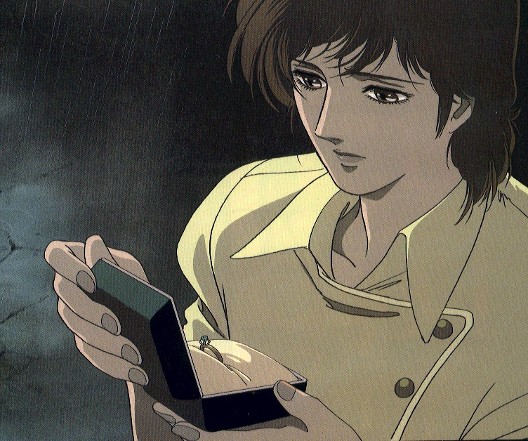

Présentation des personnages principaux de City Hunter.
Ryo Saeba (Nicky larson)

- Véritable nom: inconnu
- Surnom: City Hunter
- Nom de code: XYZ
- Date de naissance: inconnu. Kaori a décidé toutefois que ce serait le 26 mars et que Ryo avait 30 ans (manga n°23).
- Age: inconnu. Il veut avoir l’air d’avoir 20 ans, mais a entre 30 et 35 ans.
- Taille: 191,4 cm.
- Poids: 77,3kg
- Mensurations: 105-83-91.
- Groupe sanguin: AB
- Lieu de naissance: Japon.
- Nationalité: inconnue (pas d’état civil).
- Lieu de résidence: Shinjuku.
- Parents: ses vrais parents sont morts dans n accidents d’avion. Son père adoptif est Shin Kaibara.
- Activité: garde du corps/ tueur à gages/ détective privé.
- Véhicules: Mini Austin rouge (Fiat Panda 1000cl et Fiat Uno Talbot dans le DA), moto (vu l’état des véhicules après les courses-poursuites, il faut avoir une réserve…)
- Armes: Magnum 357 python, Bazooka M20 (employé surtout par Kaori).
- Caractéristiques:
- expert en tir, excellent au combat à mains nues,
- fait la chasse aux jeunes femmes,
- fréquente les cabarets,
- aime les femmes et ne supporte pas de se faire draguer par les travestis ou les gamines et
- reçoit souvent des coups de massue.
Kaori Makimura (Laura Marconi)

- Véritable nom: Kaori TACHIKI (Laura Carmelo)
- Date de naissance: 31 mars 1967
- Taille: 168,9 cm.
- Poids: 53 kg
- Mensurations: 87-59-86.
- Groupe sanguin: O+
- Lieu de naissance: Japon.
- Nationalité: japonaise.
- Lieu de résidence: Shinjuku.
- Parents: ses parents (les TACHIKI), ainsi que son père et son frère adoptif, sont tous morts. Elle a une sœur, Sayuri TACHIKI.
- Activité: assistante de City Hunter.
- Véhicules: utilise ceux de Ryu. Préfère la Fiat.
- Armes: Smith & Wesson. M629 Magnum, Colt MKIII357, Magnum, mitraillette (oulà…), bazooka (re-oulà…), ainsi que des massues allant de 1 à 1 000 000 de tonnes).
- Caractéristiques:
- technique pour poser les pièges (merci, Falcon !) (voir manga n°15),
- frappe Ryo avec les massues,
- fait la cuisine et s’occupe de l’immeuble et
- s’entraîne au tir au pistolet (en prenant parfois Ryo comme cible).